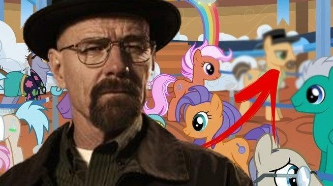

Ultimas noticias referentes a Breaking Bad
Posible nueva temporada
Se está tanteando la posibilidad de que Breaking Bad vaya a contar con una nueva temporada.
Esto es una deducción de múltiples personas del club de fans ante las afirmaciones que hizo el director
de esta série en su última entrevista: Es posible que haya otra temporada
fueron sus palabras.
Esto ha hecho que los fans más conocedores de esta serie, con su agilidad mental, hayan interpretado una
posibilidad de una nueva temporada.
Próximos trabajos de Bryan Cranston

Se ha confirmado la participación de Bryan Cranston, conocido como Heisenberg o Walter White en la serie Breaking Bad
en la serie de dibujos animados my little pony
, en la que interpretará el papel del pony amarillento.
A su vez, seguimos a la espera por ver si el actor Jessie Pinkman de la misma serie realizará el remplazo al actor bebé
conocido como el sol
en la serie teletubbies
.